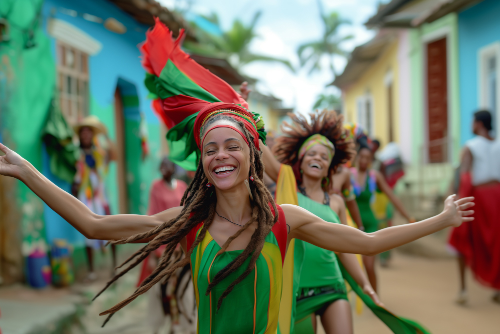

O Brasil é um país muito rico em sua cultura. Cada região tem suas próprias tradições, sabores e histórias especiais.
A comida aqui é muito variada e mostra influências de indígenas, africanos e europeus em pratos que são realmente brasileiros. O turismo é impressionante, com praias lindas, florestas enormes e cidades cheias de vida e história.
O que torna tudo ainda mais especial é a maneira como os brasileiros são acolhedores e espontâneos. Isso faz com que qualquer experiência no Brasil seja inesquecível.